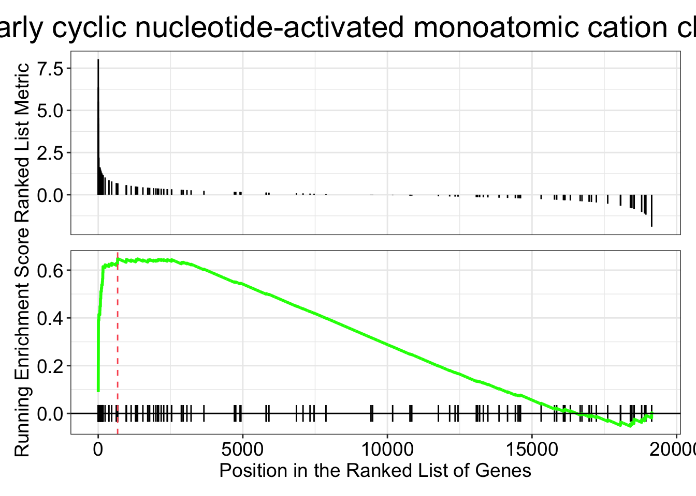
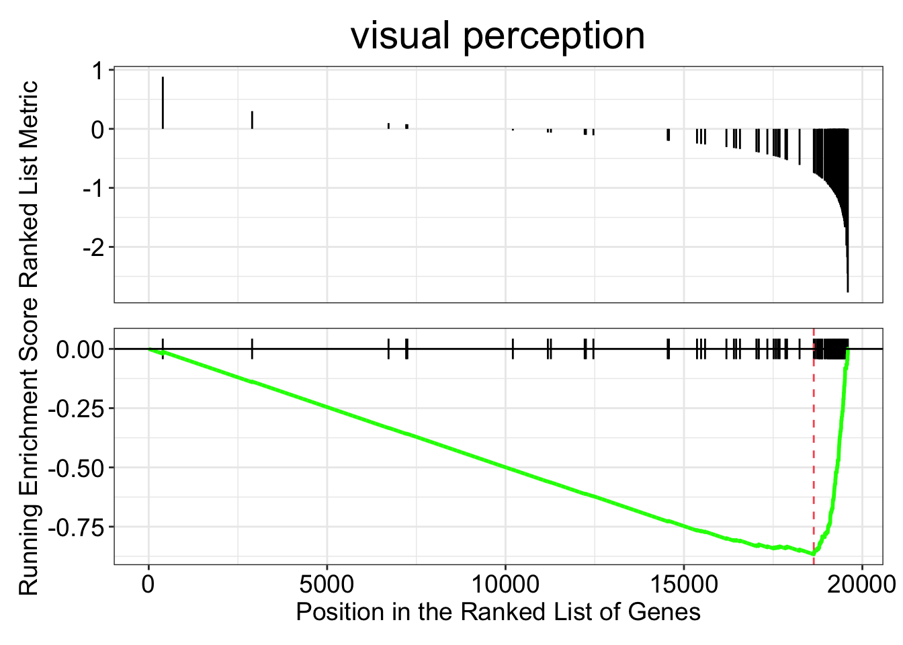
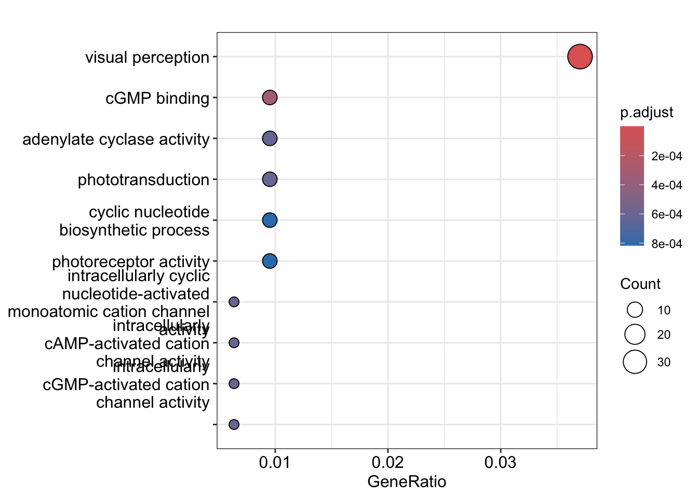
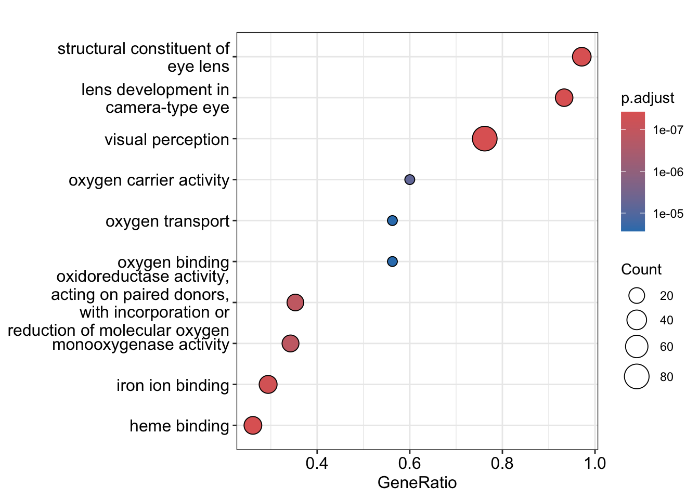
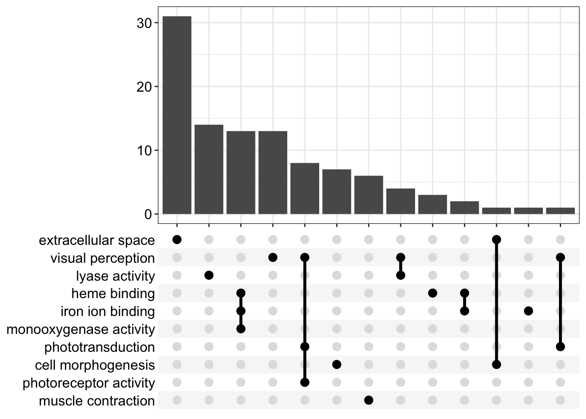
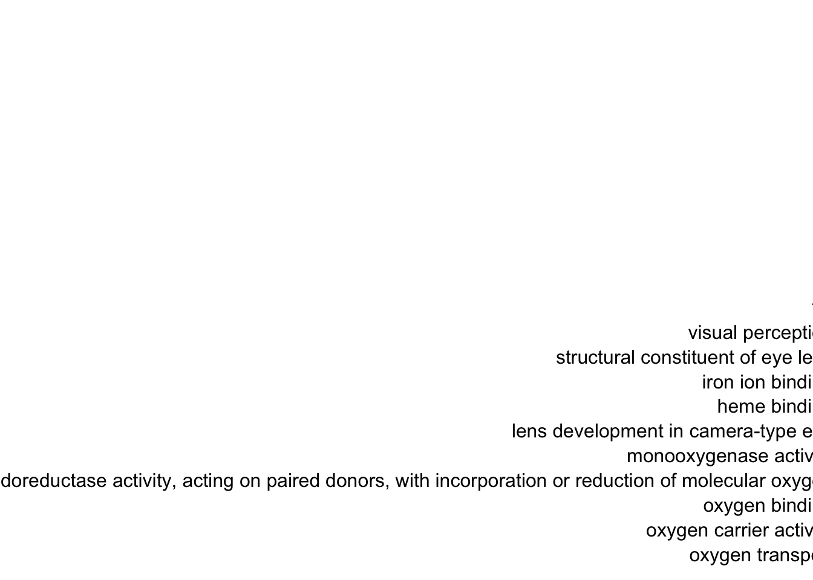
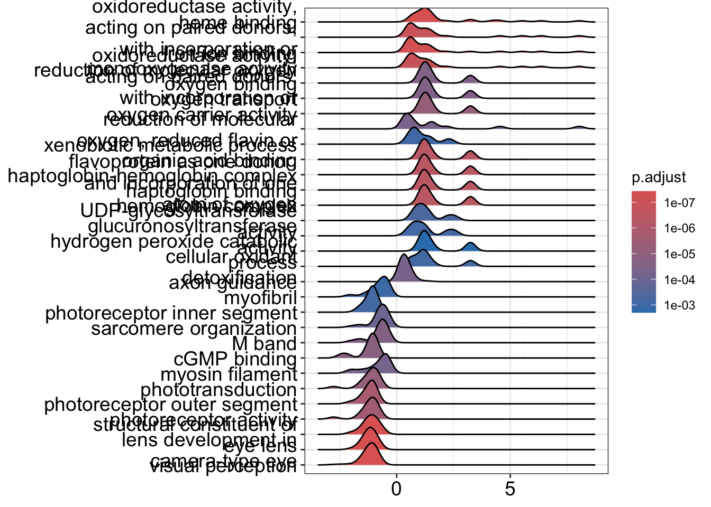
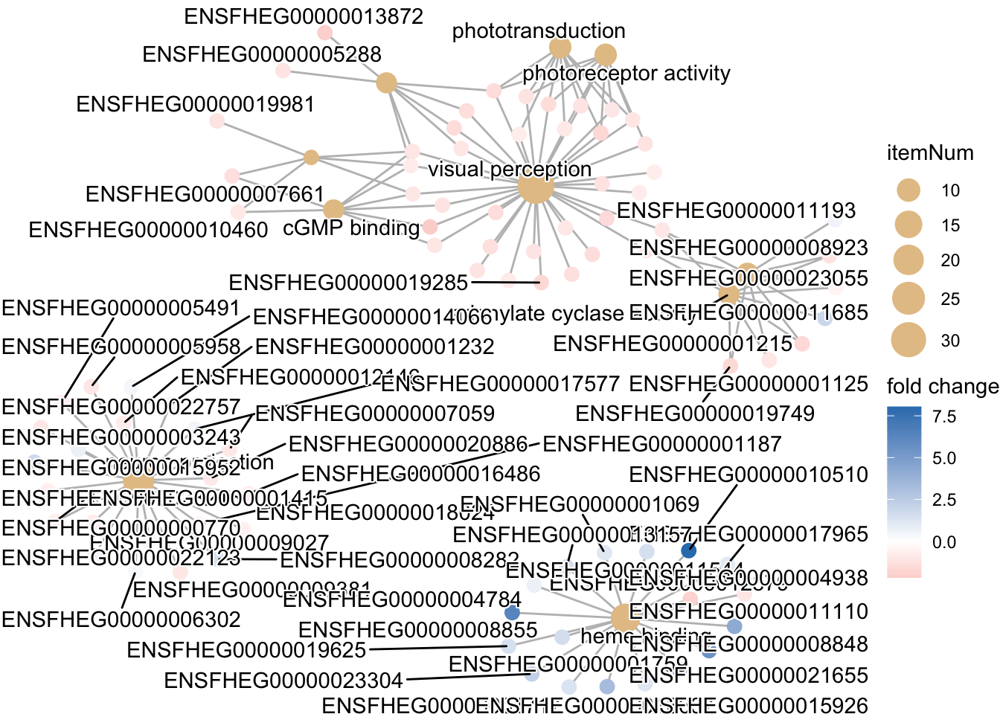

library(biomaRt)
listEnsemblArchives()23 Functional Interpretation
| Learning Objectives: |
| Conduct gene set enrichment analysis. |
| Conduct overrepresentation analysis. |
| Visualize results of GSEA and ORA. |
We’ve conducted a differential expression analysis and gotten log2 fold changes and adjusted p-values for our genes. We’ve interpreted the results in the absence of any knowledge of what those genes are. This is a useful way to approach some types of studies, particularly when it’s not clear yet even in the broad sense how the study subjects respond to experimental factors. But we definitely would like to investigate in more detail, with the goal of understanding biological processes that are involved in the response we see.
Continue building your script from the previous two chapters. This chapter assumes you’ve got the variables created previously in your environment. Restart your RStudio session without saving anything, though, and execute everything up until now. Sort out any errors before moving forward.
23.1 Functional annotation
To accomplish our goal, we need a functional annotation.
We discussed this briefly before, but to reiterate: our GFF/GTF files are structural annotations. They tell us where gene features are, but not necessarily what the genes are let alone what they do. To gain that understanding, we need a functional annotation. Functional annotation is a generic term that can refer to any type of functional information. In this course we’ll focus on using Gene Ontology terms that have been applied to the genes in our structural annotation.
23.1.1 The Gene Ontology
The Gene Ontology is a controlled vocabulary that can be used to describe gene features. The ontology has three term categories:
- Cellular component
- Molecular function
- Biological process.
All terms used to describe gene products fall in one of these three categories. GO terms within these categories are linked in network (a directed acyclic graph). Terms are assigned numeric levels, and the higher the number, the more specific the term. Parent terms have lower numeric levels, and are more broadly applicable. For a concrete example, see the page for GO:0005996, “monosaccharide metabolic process”. Click the tab for “Inferred Tree View”. This will show you the parent and child terms associated with this term. If you click the “Graph View” tab, and the “OLSVIS (interactive)”, you will be able to see the directed acyclic graph that unites this term with its parent and child terms.
The GO consortium maintains these terms, and updates their relationships, but it does not apply them. How are terms applied to genes? Typically by research groups. For model systems like human, mouse and various Drosophila species, many terms will be applied based on experimental evidence that the term is relevant. Rigorous annotations like these can also include links to published research that supports the application of the term. For many non-model systems, terms are applied based on the evolutionary relationships or structural or sequence similarity of focal genes to annotated genes in model systems.
The latter is the case for Fundulus heteroclitus. We got our structural annotation from ENSEMBL, which has also produced a functional annotation. We’re going to query the ENSEMBL database below to retrieve putative gene names and GO terms for our annotated gene features.
23.2 Retrieving functional annotations
Here we’re going to pull functional annotation information from ENSEMBL. It’s a very easy way to get the information we need. If you were working on a model vertebrate, you could also use ENSEMBL, but there are other sources of packaged annotation information as well.
To get the annotation information from ENSEMBL, we’re going to use the package bioMaRt. This package is a Bioconductor package, so you’ll need to install it accordingly. BioMart, distinct from the R package, is a data management system that allows querying of biological databases. A few large databases use it, including ENSEMBL. The R package allows us to query ENSEMBL directly from within R. Follow along below, but there is also a detailed vignette here.
23.2.1 Setting up a biomaRt dataset
The first thing we need to do is point to a version of the ensembl database we want to access. We’re working with v112. We can list the versions like this:
We can see the url for v112 is https://may2024.archive.ensembl.org. Each ENSEMBL archive actually contains several databases, or “marts”. We can list them like this:
# this code isn't being run here because of connectivity issues at the time of compilation.
ensemblhost <- "https://may2024.archive.ensembl.org"
listMarts(host=ensemblhost)We want the gene database, so we’re going to select it:
# there are two ways to do this. occasionally one will have connectivity issues.
# mart <- useMart(biomart="ENSEMBL_MART_ENSEMBL", host=ensemblhost)
# mart <- useEnsembl(biomart = "ENSEMBL_MART_ENSEMBL", mirror = "useast")
# select a mirror: 'www', 'uswest', 'useast', 'asia'
ensemblhost <- "https://may2024.archive.ensembl.org"
mart <- useEnsembl(biomart = "ENSEMBL_MART_ENSEMBL", mirror = "useast")Ensembl site unresponsive, trying www mirrorEnsembl site unresponsive, trying asia mirrorWithin each database are datasets centered on each species. You can list them with listDatasets(mart), but there are 214, so we won’t write them all out here:
listDatasets(mart) %>%
head()We can look through them, or search the descriptions for our species:
searchDatasets(mart,pattern="heteroclitus")Now we can create an object for our dataset.
# again,there can be connectivity issues, so there are two ways to do this:
# store dataset name
# killidata <- searchDatasets(mart,pattern="heteroclitus")[1,1]
# select a mirror: 'www', 'uswest', 'useast', 'asia'
# killi_mart <- useEnsembl(biomart = "ENSEMBL_MART_ENSEMBL", dataset = killidata, mirror = "useast")
# store dataset name
# killidata <- searchDatasets(mart,pattern="heteroclitus")[1,1]
# create dataset object
# killi_mart <- useMart(biomart = "ENSEMBL_MART_ENSEMBL", host = ensemblhost, dataset = killidata)
# store dataset name
killidata <- searchDatasets(mart,pattern="heteroclitus")[1,1]
# select a mirror: 'www', 'uswest', 'useast', 'asia'
killi_mart <- useEnsembl(biomart = "ENSEMBL_MART_ENSEMBL", dataset = killidata, mirror = "useast")Ensembl site unresponsive, trying www mirrorEnsembl site unresponsive, trying asia mirror23.2.2 Querying the biomaRt dataset
In BioMart’s terminology, we have three factors we need to consider when making a query:
- filters
- attributes
- values
According to the vignette, “filters and values define restrictions on the query”. You can think of a filter as a column in a table, like “ENSEMBL gene ID”. You can think of values as the values in the cells of the column. To retrieve data you can provide a filter and the values that it can take on. To extract data about genes, we will provide ENSEMBL gene IDs, but there are many other filters. To see them all, try listFilters(killi_mart). You could extract all genes on a given set of chromosome/scaffold, all genes tagged with a list of GO terms, or even provide a list of genes from another species in the database and extract their orthologs.
Attributes are similar to filters, except that these are the data we wish to retrieve. To see available attributes, try listAttributes(killi_mart).
We can search filters and attributes:
searchAttributes(mart = killi_mart, pattern = "ensembl_gene_id")searchFilters(mart = killi_mart, pattern="ensembl")We are going to extract attributes: gene names, inferred transcript length (longest per gene) and GO terms. We’re going to use the ENSEMBL gene ID as the filter, and pull the values from one of our results objects.
# gene names and ts length
ann <- getBM(
filter="ensembl_gene_id",
value=rownames(kcdose),
attributes=c("ensembl_gene_id","description","transcript_length"),
mart=killi_mart
)
# pick only the longest transcript for each gene ID
ann <- group_by(ann, ensembl_gene_id) %>%
summarize(.,description=unique(description),transcript_length=max(transcript_length)) %>%
as.data.frame()
# get GO term info
# each row is a single gene ID to GO ID mapping, so the table has many more rows than genes in the analysis
go_ann <- getBM(
filter="ensembl_gene_id",
value=rownames(kcdose),
attributes=c("ensembl_gene_id","description","go_id","name_1006","namespace_1003"),
mart=killi_mart
)The ann object is now a table with three columns:
# ignore rows with empty gene descriptions
filter(ann, description!="") %>% head()The go_ann object:
head(go_ann)Column 3 is the GO term, column 4 is the description of the term, column 5 is the type of term.
23.3 Trolling through our gene list
We’re going to get to more comprehensive approaches in a moment, but it can be very helpful to start with a DE analysis by simply looking at the ranked list of genes and looking through the literature and some databases to learn about them. Depending on your prior knowledge of your system, or the genes involved, this could prove helpful.
# Add gene names to DE results
kcdose_shrink_ann <- kcdose_shrink %>%
as.data.frame() %>%
rownames_to_column(var = "ensembl_gene_id") %>%
left_join(., ann) %>%
arrange(-abs(log2FoldChange))Joining with `by = join_by(ensembl_gene_id)`head(kcdose_shrink_ann, n=10)If we look at the description column something immediately jumps out at us. Among our top upregulated genes are 4(!) cytochrome P450s. From the first literature link on a google search:
The cytochrome P450 (CYP) enzymes are membrane-bound hemoproteins that play a pivotal role in the detoxification of xenobiotics, cellular metabolism and homeostasis.If we start looking up these top 10 differentially regulated genes we’ll see there is already quite a bit known about many of them (with the exception perhaps of hepcidin) with respect to toxicant exposure, and that they are all already known to be upregulated to aryl-hydrocarbon receptor signaling in response to various types of nasty chemicals.
We can look at the comparative toxicogenomics database, which will allow us to search by chemical or gene for known connections. We can look at reactome, a pathway database. Or we can just dig into the literature.
So what we can already start to see here is that our pattern of strong expression response in AHR signaling pathway genes in KC, but not ER, suggests that the tolerance phenotype is linked to a desensitization of this pathway to toxicants.
There is a broader way to approach this question though, and it will provide a bit more comprehensive view of what’s going on here, rather than a focus on the first few genes (out of hundreds of differentially regulated genes).
23.4 Enrichment analysis
We didn’t just grab gene names above, we also pulled down GO terms. There are two similar ways we can approach analyzing our GO terms.
- Over-representation analysis.
- Gene-set enrichment analysis.
In over-representation analysis we categorize genes as either differentially expressed or not, by setting an adjusted p-value and/or log2 fold change threshold (probably a shrunken log2 fold change). Then we ask if any GO terms are over- (or possibly under-) represented among the DE genes.
In gene-set enrichment, we provide a continuous variable to rank the genes by log2 fold changes and ask if genes tagged with a given GO term are randomly distributed in this ranking. By not discretely categorizing genes as DE or not, gene-set enrichment can detect coordinated but small changes across many genes in a functional category.
In many cases these will produce similar results.
We’re going to use clusterProfiler to do this analysis. clusterProfiler is a bioconductor package, and you’ll need to install it accordingly. Unfortunately, the installation for this package can sometimes be a bit rough. If some dependencies fail to install, thus killing the entire installation, you can try installing them with install.packages("packagename"), and then trying clusterProfiler again. You may need to do this repeatedly with multiple dependencies. This isn’t all that common with R/bioconductor, but it does happen. Additionally, for some of the plots we make with clusterProfiler we’ll use enrichplot. Some dependencies won’t be installed automatically, and they will raise errors when you run the command. As you come across them, install those packages. Try to work this out yourself if you can, but reach out for help if you reach an impasse.
library(clusterProfiler)
library(enrichplot)23.4.1 Over-representation analysis
In over-representation analysis, we ask whether a functional category is present more often than we expect by chance among our differentially expressed genes.
A straightforward approach is to use a the “hypergeometric test”. We can think of the data as a 2x2 contingency table, with rows containing genes that are DE or not DE and columns containing genes that are in the functional category (say “visual perception”) or not in the category.
| In category | Not in category | Total | |
|---|---|---|---|
| DE | 27 | 918 | 945 |
| Not DE | 41 | 18622 | 18663 |
| Total | 68 | 19540 | 19608 |
The hypergeometric test will essentially ask if the number of DE genes in the category is more than you would expect given total DE and not-DE genes.
A key question here is what set of genes to use as the “universe” of total genes, or the background set. At first you might think you should use all annotated genes in the genome, but this isn’t really a great approach. If you imagine a case where you are working on a specialized tissue, you would trivially expect that expressed genes would be enriched for the functions of that tissue, and that many irrelevant genes may not be expressed at all. Because of that enrichment at the expression level, differentially expressed genes are more likely to belong to those functional categories, even if they somehow were a completely random subset of expressed genes. To avoid this problem, your background set should be genes that are expressed in you experimental samples. What counts as expressed? Practically it probably makes sense to use the genes that pass the independent filtering procedure in DESeq2, which is what we’ll do here, but you could also set an expression threshold.
To do this test, we can use the function enricher(). We need to provide:
- A list of identifiers of differentially expressed genes.
- The “universe” of genes under consideration.
- A table linking functional categories to sensible descriptions.
- A table linking genes to functional categories (we already have this in the
go_annobject created above).
# get ENSEMBL gene IDs for genes with padj < 0.1
genes <- rownames(kcdose[which(kcdose$padj < 0.1),])
# get ENSEMBL gene IDs for universe (all genes with non-NA padj passed independent filtering)
univ <- rownames(kcdose[!is.na(kcdose$padj),])
# pull out the columns of go_ann containing GO IDs and descriptions, keep only unique entries.
gonames <- unique(go_ann[,c(3,4)]) %>% unique()
# truncate GO descriptions if you want (for cleaner plotting lataer)
# gonames[,2] <- sapply(substring(gonames[,2],1,27), FUN=function(x){if(nchar(x) == 27){x <- paste(x,"...",sep="")}; x})Now we can run the enricher() function:
kcdose_enrich <- enricher(
gene=genes,
universe=univ,
TERM2GENE=go_ann[,c(3,1)],
TERM2NAME=gonames
)The result is an S4 object. You can more easily inspect the results by making a data.frame, although the data are stored in a somewhat messy format.
as.data.frame(kcdose_enrich)In this case for each significant GO term we’ve got the column GeneRatio, which gives the number of DE genes in the category/total DE genes, BgRatio which gives the total number of genes in the category / total number of genes considered, pvalue which is the raw p-value, p.adjust, which by default is the false discovery rate adjusted p-value produced by p.adjust() with the Benjamini-Hochberg method and qvalue, which is a slightly different method of producing FDR adjusted p-values. These two are similar, but subtly different, but the q-value will generally be slightly lower. For discussions see here and here.
23.4.2 Gene-set enrichment analysis
Now we’ll take the second approach to functional enrichment: gene-set enrichment analysis. In this case, instead of calling genes DE or not, we’ll ask if functional categories tend to be enriched for higher or lower expression levels. For this we need a list of log2 fold changes for all genes in the universe. clusterProfiler wants this to be provided as a sorted vector of log2 fold changes where each element is named with the gene ID. Previously, we discussed using shrunken log2 fold changes for ranking genes, but because we are hoping to be able to detect small, potentially individually non-significant changes in expression that are coordinated across a functional group, we’re going to use the raw log2 fold changes. If we used the shrunken log2 fold changes, we might smooth out a lot of noise, but also reduce signal. In this particular case, if you use the shrunken log2 fold changes you do in fact get fewer enriched terms, but the most significant ones are retained. You can try it and see for yourself.
# extract log2 fold changes, only for genes that passed independent filtering.
l2fcs <- as.data.frame(kcdose) %>%
filter(!is.na(padj)) %>%
select(log2FoldChange)
# put log2FCs in a vector, add gene IDs as names, sort
l2fcvec <- l2fcs[,1]
names(l2fcvec) <- rownames(l2fcs)
l2fcvec <- sort(l2fcvec, decreasing=TRUE)Now we’re ready to run the GSEA() function, providing the term-to-gene mapping and the descriptions of the GO term IDs.
kcdose_gsea <- GSEA(
geneList=l2fcvec,
TERM2GENE=go_ann[,c(3,1)],
TERM2NAME=gonames
) Warning in gsea(geneList = geneList, gene_sets = geneSets, weight = weight, :
There were 2 pathways for which P-values were not calculated properly due to
unbalanced gene-level statistic values. For such pathways pvalue, NES and
log2err are set to NA. You can try to increase nPermSimple.Warning in gsea(geneList = geneList, gene_sets = geneSets, weight = weight, :
For some pathways, in reality P-values are less than 1e-10. You can set the eps
argument to zero for better estimation.Warning in calculate_qvalue(gsea_res$pvalue): Invalid p-values detected (NA,
non-finite, <0, or >1). qvalue will be computed on valid p-values only.Warning in enrichit::gsea_gson(geneList = geneList, exponent = exponent, : NA
values detected in gene set IDs. Replacing with string 'NA'.Warning in enrichit::gsea_gson(geneList = geneList, exponent = exponent, :
Duplicate gene set IDs detected: NA... (Total 1). Unique suffixes added.So what have we done here? It’s easiest to look at a couple of plots to illustrate. There are two plots below, one for a term that tends to be upregulated and one for a term that tends to be downregulated.
gseaplot(kcdose_gsea, by = "all", title = kcdose_enrich$Description[4], geneSetID = 4)
gseaplot(kcdose_gsea, by = "all", title = kcdose_enrich$Description[1], geneSetID = 1)
We took our vector of log2 fold changes and sorted them. In the top panel of the two plots above you can see the log2 fold changes for each gene in the given category on the y-axis, with the gene’s rank on the x-axis. For each functional category the GSEA function steps through the vector, gene by gene, calculating a running enrichment score. The score reflects the bias in the observed vs expected number of genes in the category up to that point. The score will be negative if fewer in-category genes have been encountered than expected, and positive if there have been more. Then for the peak (or trough) of the enrichment score, a p-value is calculated. The original paper, Subramanian et al. 2005 gives a nice explanation, and is not too long.
As with over-representation, we can look at our results as a table:
as.data.frame(kcdose_gsea)23.4.3 Visualization
Now that we’ve got our results, there are some helpful visualizations we can do. Most of this is covered in this helpful page by the package author.
23.4.3.1 Dotplots
Dotplots are a common approach. For the ORA results, the x-axis below is the GeneRatio, which is the fraction of genes in the category that are DE (35/953 = 0.037 for “visual perception”).
dotplot(kcdose_enrich)
If we make the figure from the GSEA results, then GeneRatio is actually something completely different: the fraction of genes in the category that are found in the “leading edge” subset. The leading-edge genes are the ones in the “enriched” part of the log2 fold change distribution (either to the left or the right of the peak in the enrichment score).
dotplot(kcdose_gsea)
23.4.3.2 Upset plots
We can also make upset plots. These show genes that are shared by different combinations of GO terms. For the GSEA version, instead of just a count, you get the distribution of log2 fold changes. These are only for the “leading edge” genes in each category.
upsetplot(kcdose_enrich)Warning: Using `size` aesthetic for lines was deprecated in ggplot2 3.4.0.
ℹ Please use `linewidth` instead.
ℹ The deprecated feature was likely used in the ggupset package.
Please report the issue at <https://github.com/const-ae/ggupset/issues>.
upsetplot(kcdose_gsea)
23.4.3.3 Ridgeplots
A ridgeplot is an excellent way to see the distribution of log2 fold changes for enriched categories, though beware that the smoothed distributions may be a little misleading for categories without many genes. Unfortunately the function does not have an easy way to manipulate the y-axis text size, but if you wanted to mess with it, you could get the underlying function with enrichplot:::ridgeplot.gseaResult and edit it yourself!
ridgeplot(kcdose_gsea,label_format=30)Picking joint bandwidth of 0.225
23.4.3.4 Gene-concept network
This network plot can help us (a little better than the upset plot) understand how our enriched terms and the genes tagged with them relate to each other. This works similarly for both the ORA and GSEA results. Nodes are either genes or GO terms, and edges connect genes to GO terms.
cnetplot(kcdose_enrich, showCategory=10, foldChange=l2fcvec)